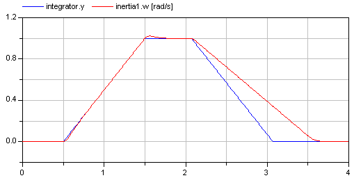
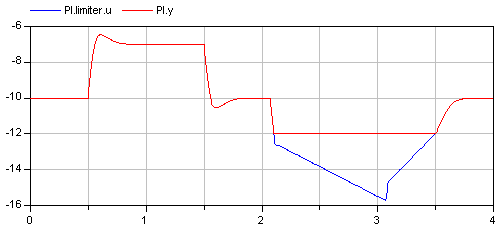
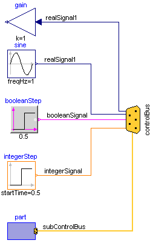
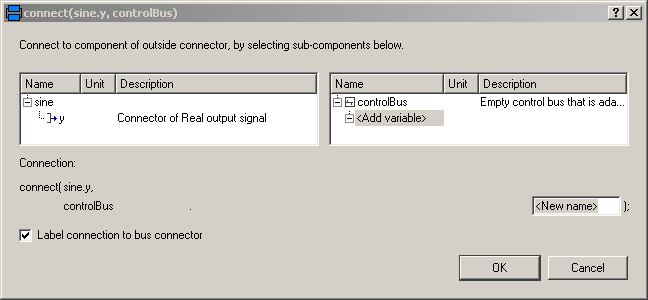
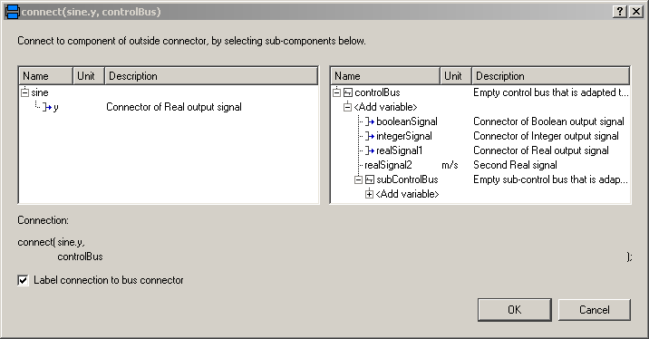

This package contains example models to demonstrate the usage of package blocks.
| Name | Description |
|---|---|
| Demonstrate usage of the Continuous.LimPID controller | |
| Show logical sources and demonstrate their diagram animation | |
| Example for a network of logical blocks | |
| Demonstration of signal bus usage | |
| Utility models and connectors for the demonstration example Modelica.Blocks.Examples.BusUsage |
This is a simple drive train controlled by a PID controller:
The PI controller settings included "limitAtInit=false", in order that the controller output limits of 12 Nm are removed from the initialization problem.
The PI controller is initialized in steady state (initType=SteadyState) and the drive shall also be initialized in steady state. However, it is not possible to initialize "inertia1" in SteadyState, because "der(inertia1.phi)=inertia1.w=0" is an input to the PI controller that defines that the derivative of the integrator state is zero (= the same condition that was already defined by option SteadyState of the PI controller). Furthermore, one initial condition is missing, because the absolute position of inertia1 or inertia2 is not defined. The solution shown in this examples is to initialize the angle and the angular acceleration of "inertia1".
In the following figure, results of a typical simulation are shown:


In the upper figure the reference speed (= integrator.y) and the actual speed (= inertia1.w) are shown. As can be seen, the system initializes in steady state, since no transients are present. The inertia follows the reference speed quite good until the end of the constant speed phase. Then there is a deviation. In the lower figure the reason can be seen: The output of the controller (PI.y) is in its limits. The anti-windup compensation works reasonably, since the input to the limiter (PI.limiter.u) is forced back to its limit after a transient phase.
| Name | Description |
|---|---|
| driveAngle | Reference distance to move [rad] |
This simple example demonstrates the logical sources in Modelica.Blocks.Sources and demonstrate their diagram animation (see "small circle" close to the output connector). The "booleanExpression" source shows how a logical expression can be defined in its parameter menu refering to variables available on this level of the model.
This example demonstrates a network of logical blocks. Note, that the Boolean values of the input and output signals are visualized in the diagram animation, by the small "circles" close to the connectors. If a "circle" is "white", the signal is false. It a "circle" is "green", the signal is true.
Signal bus concept
In technical systems, such as vehicles, robots or satellites, many signals are exchanged between components. In a simulation system, these signals are usually modelled by signal connections of input/output blocks. Unfortunately, the signal connection structure may become very complicated, especially for hierarchical models.
The same is also true for real technical systems. To reduce complexity and get higher flexibility, many technical systems use data buses to exchange data between components. For the same reasons, it is often better to use a "signal bus" concept also in a Modelica model. This is demonstrated at hand of this model (Modelica.Blocks.Examples.BusUsage):

The control and sub-control bus icons are provided within Modelica.Icons. In Modelica.Blocks.Examples.BusUsage_Utilities.Interfaces the buses for this example are defined. Both the "ControlBus" and the "SubControlBus" are expandable connectors that do not define any variable. For example, Interfaces.ControlBus is defined as:
expandable connector ControlBus
extends Modelica.Icons.ControlBus;
annotation (Icon(Rectangle(extent=[-20, 2; 22, -2],
style(rgbcolor={255,204,51}, thickness=2))));
end ControlBus;
Note, the "annotation" in the connector is important since the color and thickness of a connector line are taken from the first line element in the icon annotation of a connector class. Above, a small rectangle in the color of the bus is defined (and therefore this rectangle is not visible). As a result, when connecting from an instance of this connector to another connector instance, the connecting line has the color of the "ControlBus" with double width (due to "thickness=2").
An expandable connector is a connector where the content of the connector is constructed by the variables connected to instances of this connector. For example, if "sine.y" is connected to the "controlBus", the following menu pops-up in Dymola:

The "Add variable/New name" field allows the user to define the name of the signal on the "controlBus". When typing "realSignal1" as "New name", a connection of the form:
connect(sine.y, controlBus.realSignal1)
is generated and the "controlBus" contains the new signal "realSignal1". Modelica tools may give more support in order to list potential signals for a connection. For example, in Dymola all variables are listed in the menu that are contained in connectors which are derived by inheritance from "controlBus". Therefore, in BusUsage_Utilities.Interfaces.InternalConnectors the expected implementation of the "ControlBus" and of the "SubControlBus" are given. For example "Internal.ControlBus" is defined as:
expandable connector StandardControlBus
extends BusUsage_Utilities.Interfaces.ControlBus;
import SI = Modelica.SIunits;
SI.AngularVelocity realSignal1 "First Real signal";
SI.Velocity realSignal2 "Second Real signal";
Integer integerSignal "Integer signal";
Boolean booleanSignal "Boolean signal";
StandardSubControlBus subControlBus "Combined signal";
end StandardControlBus;
Consequently, when connecting now from "sine.y" to "controlBus", the menu looks differently:

Note, even if the signals from "Internal.StandardControlBus" are listed, these are just potential signals. The user might still add different signal names.